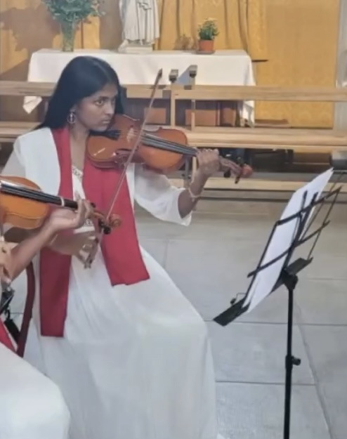
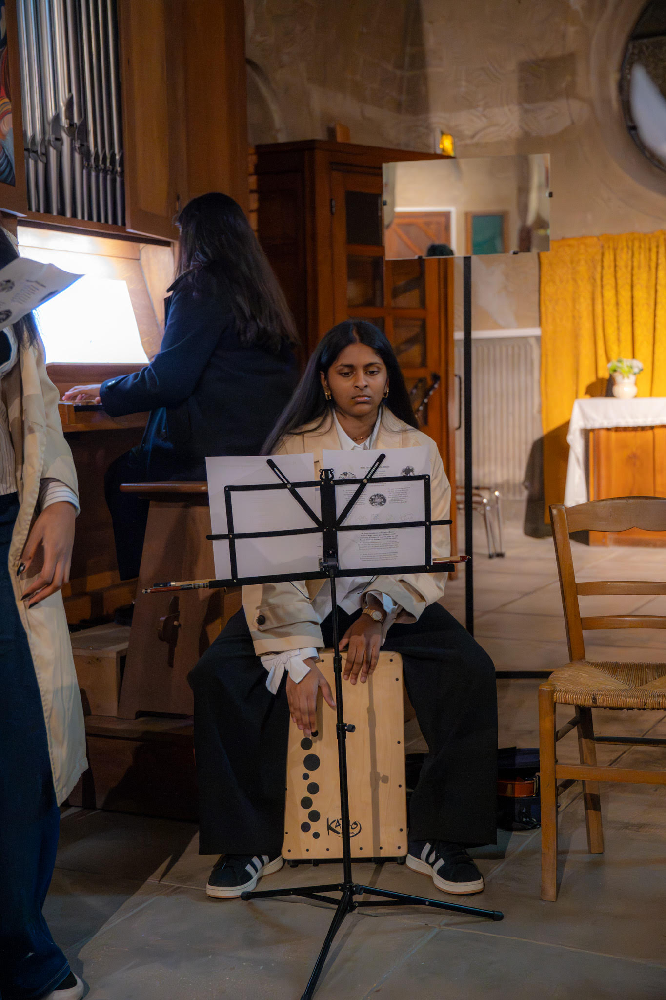

Mon Évolution Musicale
De mon apprentissage classique à la production de musique.
Mes débuts
Tout commence à mes 6 ans avec le solfège. Dès l'année suivante à mes 7 ans, je débute le violon, qui deviendra mon compagnon de route principal. 
Passion d'enfance : Le Piano
À l'adolescence, je réalise mon rêve d'apprendre le piano. Je le pratique maintenant depuis 5 ans, et m'a permis de jouer à l'oreille.
La Scène & Le Duo
Je rejoins un groupe et y chante pendant 3 ans passant de Amy Whinehouse à Bob Marley. C'est aussi le début d'un beau duo, j'accompagne une chorale au violon avec ma sœur à l'orgue.
Découverte de la Prod
Je commence à composer mes propres instrus et sons. J'apprends à maîtriser FL Studio et GarageBand pour exprimer mes idées et ma passion.
L'Expérience Demos
Une année intense au sein de l'orchestre Demos. En parallèle, ma curiosité me pousse à débuter la guitare pour élargir mes connaissances musicales et m'accompagner au chant.
La Musique mon quotidien
J'ai appris à jouer le Cajon car je voulais apprendre une percussion. Je continue toujours le violon en conservatoire, et je n'ai jamais arrêté le piano.
"La musique donne une âme à nos cœurs et des ailes à la pensée." - Platon
J'aime cette citation, elle me parle et c'est donc avec évidence que j'ai choisi la musique une nouvelle fois pour m'accompagner dans ce projet.
Mes artistes préférés
Scrollez à droite et passez la souris sur une image pour voir les détails.
Vos Musiques du moment
Les pépites ajoutées par vous via le formulaire en-dessous :
Anecdotes
Anecdotes de production :
Ajoute ta pépite !
Car la musique est surtout un partage...
Partage un lien Spotify. Il apparaîtra dans la section "Vos Musiques du moment" juste au-dessus.